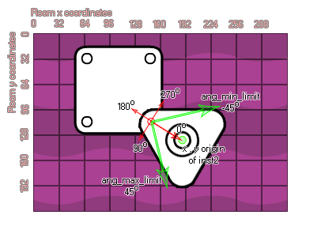

physics_joint_revolute_create(inst1, inst2, w_anchor_x, w_anchor_y, ang_min_limt, ang_max_limit, ang_limit, max_motor_torque, motor_speed, motor, col)
| Argument | La description |
|---|---|
| inst1 | La première instance à se connecter avec l'articulation |
| inst2 | La deuxième instance pour se connecter avec l'articulation |
| w_anchor_x | La coordonnée x pour l'articulation, dans le monde du jeu |
| w_anchor_y | La coordonnée y pour l'articulation, dans le monde du jeu |
| ang_min_limit | La limite inférieure autorisée pour l'angle d'articulation |
| ang_max_limit | La limite supérieure autorisée pour l'angle de joint |
| ang_limit | Que ce soit pour limiter l'angle de l'articulation (vrai) ou non (faux) |
| max_motor_torque | Définit le couple maximal du moteur utilisé pour atteindre la vitesse du moteur souhaitée (en Newton par mètre) |
| motor_speed | C'est la vitesse à laquelle le moteur doit tourner |
| motor | Si le moteur doit être actif (vrai) ou non (faux) |
| col | Si les deux instances peuvent entrer en collision (vrai) ou non (faux) |
Retourne: index de l'articulation
Un joint rotatif force deux corps à partager un point d'ancrage commun (souvent appelé un point charnière) et l'articulation a un seul degré de liberté - la rotation relative des deux corps autour de ce point. Pour spécifier une révolute, vous devez fournir deux instances et un seul point d'ancrage dans la pièce, comme vous pouvez le voir dans l'image fournie:
Si vous regardez l'image, vous pouvez voir que les deux instances ont été créées pour se chevaucher et au point où elles se touchent, nous avons défini une articulation révolutionnaire. Maintenant, cette articulation peut être limitée dans sa liberté de rotation grâce aux valeurs "ang_min_limit" et "ang_max_limit". Comment cela marche-t-il? Eh bien, regardons une autre image:

Comme vous pouvez le voir, les angles dans le monde physique ne sont pas les mêmes que les GameMaker Studio 2 standard de GameMaker Studio 2 où le droit est de 0 degrés, puis il va dans le sens inverse des aiguilles d'une montre jusqu'à 90, gauche 180 et 270. Non, Pour l'articulation rotoïde, l'axe des 0 degrés s'étend de la position du joint à l'origine de la seconde instance définie par la fonction et les angles sont ensuite calculés dans le sens des aiguilles d'une montre. Si vous activez la limitation d'angle, les limites sont définies par rapport à cet axe de 0 degré et la plage de limites doit être égale à zéro, sinon le joint va basculer lorsque la pièce commence. Enfin, vous pouvez définir le joint comme ayant un moteur ou non. Cela signifie que lorsque non influencé par une collision, le joint se déplace dans une direction, qui est définie par la vitesse du moteur avec un nombre positif étant dans le sens horaire et un nombre négatif étant dans le sens antihoraire. L'argument "max_motor_torque" sert à limiter la vitesse de la rotation pour ne pas avoir de moteur en accélération perpétuelle et limiter l'influence qu'une collision peut avoir sur la rotation. De cette façon, vous pouvez utiliser un moteur à joint pour simuler le frottement des joints en réglant la vitesse de l'articulation à zéro et le couple maximal à une valeur faible mais significative. Le moteur essayera d'empêcher le joint de tourner, mais cédera à une charge significative.
Comme pour tous les joints, si vous définissez la valeur "col" sur true alors les deux instances peuvent interagir et entrer en collision les unes avec les autres, mais seulement si elles ont des événements de collision, mais si elle est définie sur false, ils ne vont pas entrer en collision, peu importe quoi.
var mainFixture, o_id;
mainFixture = physics_fixture_create();
physics_fixture_set_circle_shape(mainFixture,
sprite_get_width(sprite_index) / 2);
o_id=instance_create_layer(x+25, y, "Instances", obj_Door);
physics_fixture_bind(mainFixture, id);
physics_fixture_bind(mainFixture, o_id);
physics_joint_revolute_create(id, o_id, x+25, y, -90, 90, 1, 0, 0,
0, 0);
physics_fixture_delete(mainFixture);
Le code ci-dessus crée et définit un nouveau fixture, puis crée une instance de "obj_Door", liant le fixture créé aux deux nouveaux objets. Ils sont ensuite rejoints par un joint rotatif sans moteur et les angles limités à un swing de +/- 90 degrés. Enfin, le projecteur est supprimé car il n'est plus nécessaire.